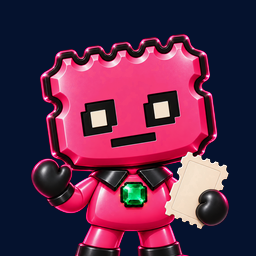
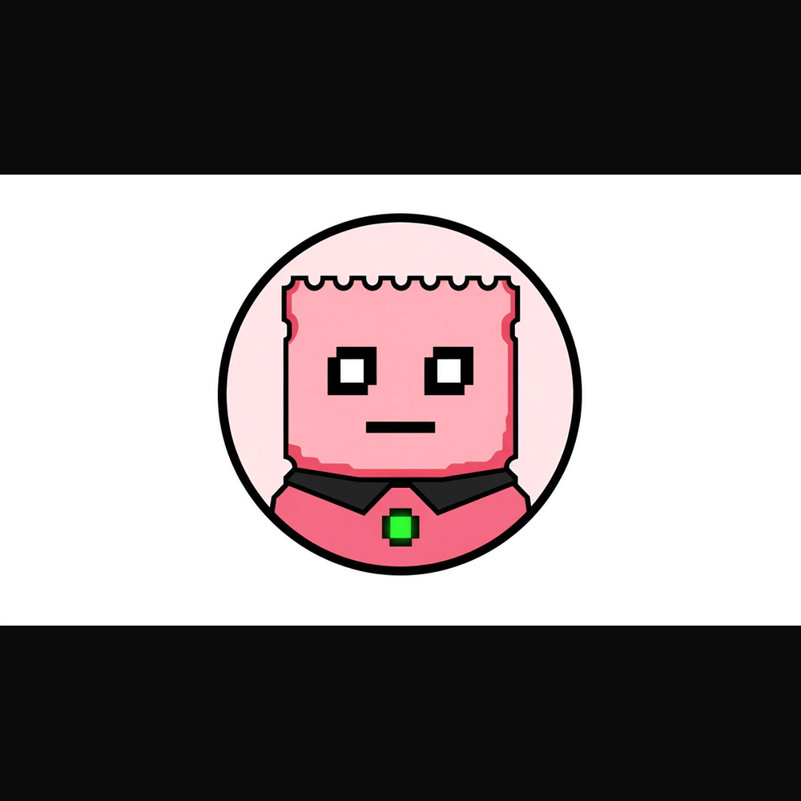

MarcaBrand
Dos piezas ya aprobadas: el personaje y el logo que está en el token. Esta web no los sustituye. La interfaz usa la paleta de Verify (PR 14) para que las herramientas y las páginas se lean como un solo sitio.Two pieces already approved: the character and the logo that is on the token. This website does not replace them. The interface uses the Verify palette (PR 14) so the tools and the pages read as one site.


Cómo comprobar el logo y los metadatos on-chainHow to check the logo and the on-chain metadata
Los metadatos del token son inmutables y apuntan a IPFS (ipfs.io). Ese gateway público está dejando de servir archivos a apps, así que algunas webs o wallets pueden mostrar un «?» en lugar del logo. La CA y el token no cambian por eso.The token metadata is immutable and points at IPFS (ipfs.io). That public gateway is phasing out serving files to apps, so some websites or wallets may show a “?” instead of the logo. The CA and the token do not change because of that.
Cómo comprobarlo: el CID del logo aparece dentro de los metadatos del token (campo image) y el de los metadatos en su URI on-chain (visible en Solscan). Descarga el archivo y calcula su SHA-256 o su CID (ipfs add --only-hash --cid-version=1 --raw-leaves): debe coincidir. Un logo «oficial» que no coincida con estos archivos no es STUBX.How to check it: the logo CID appears inside the token metadata (image field) and the metadata CID is in its on-chain URI (visible on Solscan). Download the file and compute its SHA-256 or its CID (ipfs add --only-hash --cid-version=1 --raw-leaves): it must match. An “official” logo that does not match these files is not STUBX.
- Logo on-chain, copia de los mismos bytes. CID bafkreiew224xxf6ncagzzew5bfxlc6hejrib6jmxx66kxdrv5pkeoavd5e. SHA-256 96d6b97b97cd100d9c92dd096eb178e44c501f2597bfbcab8e35ebd44702a3e9.On-chain logo, a copy of the same bytes. CID bafkreiew224xxf6ncagzzew5bfxlc6hejrib6jmxx66kxdrv5pkeoavd5e. SHA-256 96d6b97b97cd100d9c92dd096eb178e44c501f2597bfbcab8e35ebd44702a3e9. archivofile
- Metadatos on-chain, JSON, copia exacta. CID bafkreif7vy3etvfskxlszijzqu2ebavqphg7ji6n2wbmnznseti5s2rnc4. SHA-256 bfae3649d4b255d72ca13985344082b079cdf4a3cdd582c6e5b224d1d96a2d17.On-chain metadata, JSON, an exact copy. CID bafkreif7vy3etvfskxlszijzqu2ebavqphg7ji6n2wbmnznseti5s2rnc4. SHA-256 bfae3649d4b255d72ca13985344082b079cdf4a3cdd582c6e5b224d1d96a2d17. JSON
- Única excepción: el logo para agregadores publicado en stubxai.com/logo/stubx-logo-1024.png (SHA-256 que empieza por 389982f3; el hash completo está en token.json y arriba). Es el mismo personaje, ilustración con elementos generados con IA, servido desde stubxai.com para las webs que no cargan IPFS. La CA y los metadatos on-chain no cambian.The only exception: the aggregator logo published at stubxai.com/logo/stubx-logo-1024.png (SHA-256 starting with 389982f3; the full hash is in token.json and above). It is the same character, an illustration with AI-generated elements, served from stubxai.com for websites that do not load IPFS. The CA and the on-chain metadata do not change.

PersonajeCharacter
Un ticket rosa en pixel art, borde perforado, ojos cuadrados, boca recta y una gema verde. Seco y escéptico. La gema significa que el prototipo está en pie. No significa «aprobado para invertir». El personaje se generó con IA. Lema: No stub, no story.A pink pixel-art ticket, perforated edge, square eyes, a straight mouth, and a green gem. Dry and skeptical. The gem means the prototype is standing. It does not mean “approved for investment”. The character was generated with AI. Motto: No stub, no story.
Paleta de la interfazInterface palette
Fondo #071422, panel #10243f, texto #f4f7fb, línea #8eaccf, acento #ff2d6f. Es la paleta de los borradores de Verify y Lab (PR 14, 2026-10-09), para que el semáforo y las páginas usen los mismos componentes. El kit de memes v0.2 conserva sus propios colores: rosa #fb437f, esmeralda #1beb91, azul noche #05122e.Background #071422, panel #10243f, text #f4f7fb, line #8eaccf, accent #ff2d6f. It is the palette of the Verify and Lab drafts (PR 14, 2026-10-09), so the traffic light and the pages use the same components. The meme kit v0.2 keeps its own colors: pink #fb437f, emerald #1beb91, night blue #05122e.
Kit de memes 0.2 · 2026-09-27Meme kit 0.2 · 2026-09-27
Descargar el zip (2,9 MB)Download the zip (2.9 MB). SHA-256 799e0371bdfd4619d61d9e29206ca7eb020e78a01981bb11e73a412405091461. 28 archivos. Licencia propia dentro del zip (LICENCIA.md). Las fuentes Silkscreen e Inter van con SIL OFL 1.1. El código del agente es MIT.28 files. Its own license inside the zip (LICENCIA.md). The Silkscreen and Inter fonts ship with SIL OFL 1.1. The agent code is MIT.
Plantillas: T01 Pide el talón, T02 Talón opina, T05 Escalera de pruebas, T06 Ticket PPM, T07 Reacción, T08 Glosario Talón. El pie «Cripto de alto riesgo · Puedes perderlo todo · No es consejo de inversión.» se mantiene visible.Templates: T01 Pide el talón, T02 Talón opina, T05 Escalera de pruebas, T06 Ticket PPM, T07 Reacción, T08 Glosario Talón. The footer “High-risk crypto · You could lose everything · Not investment advice.” stays visible.
Reglas del kitKit rules
SíYes
- Humor sobre pruebas, transparencia y agentes de IA.Humor about proofs, transparency, and AI agents.
- Consejos antiestafa: leer el handle entero y no firmar lo que no se entiende.Anti-scam advice: read the whole handle and do not sign what you do not understand.
- Usar a Talón tal cual y publicar desde tu cuenta.Use Talón as-is and post from your own account.
NoNo
- Precio, subidas, «100x», cohetes, lunas ni llamadas a comprar o vender.Price, pumps, “100x”, rockets, moons, or calls to buy or sell.
- Poner la CA en un meme. La única CA está en esta web y en @stubxai.Putting the CA in a meme. The only CA is on this website and on @stubxai.
- Hacerse pasar por STUBX o usar el avatar como foto de un perfil.Impersonating STUBX or using the avatar as a profile photo.
- Sorteos, airdrops, whitelists o pedir dinero, datos o firmas.Giveaways, airdrops, whitelists, or asking for money, data, or signatures.
- No ataques a personas ni proyectos reales por su nombre, y nada ofensivo o ilegal.Do not attack real people or projects by name, and nothing offensive or illegal.
Puedes descargar el kit y usarlo y adaptarlo para memes y contenido de fans sin ánimo de lucro, gratis y sin pedir permiso, si cumples las reglas de arriba. No puedes venderlo ni usarlo en anuncios, productos o promociones de pago sin permiso por escrito de STUBX (desde stubxai.hq@gmail.com o en una respuesta pública de @stubxai). Esta licencia no te hace socio ni representante de STUBX, no es una licencia de marca y no da derecho a nada (tokens, pagos ni acceso). El kit se ofrece tal cual, sin garantías, y el permiso se puede retirar; si alguien incumple las reglas, su permiso termina. Texto completo: LICENCIA.md, dentro del zip.You can download the kit and use and adapt it for non-commercial fan memes and content, free and without asking permission, if you follow the rules above. You cannot sell it or use it in ads, products, or paid promotions without written permission from STUBX (from stubxai.hq@gmail.com or in a public reply from @stubxai). This license does not make you a partner or a representative of STUBX, it is not a trademark license, and it grants no right to anything (tokens, payments, or access). The kit is offered as-is, with no warranties, and permission can be withdrawn; if someone breaks the rules, their permission ends. Full text: LICENCIA.md, inside the zip.
El zip incluye además ejemplos rellenados, el avatar en 1080 px, la cabecera con aviso (solo para artículos), las fuentes con su licencia y un README con instrucciones. Avatar oficial: PNG 512 px y JPG 1080 px, dentro del kit.The zip also includes filled-in examples, the avatar at 1080 px, the header with the notice (for articles only), the fonts with their license, and a README with instructions. Official avatar: PNG 512 px and JPG 1080 px, inside the kit.
No hay concursos, premios, pagos ni tokens por hacer memes. Nadie de STUBX te escribirá por mensaje privado por tu meme. Si pasa, es una estafa: no respondas, no abras enlaces y no firmes nada.There are no contests, prizes, payments, or tokens for making memes. Nobody from STUBX will write to you in a private message about your meme. If that happens, it is a scam: do not reply, do not open links, and do not sign anything.